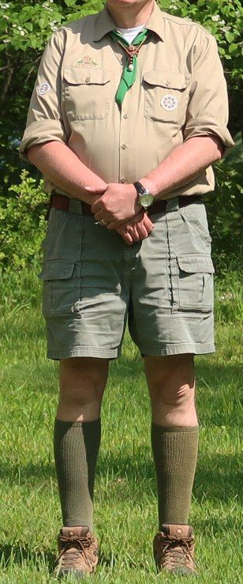
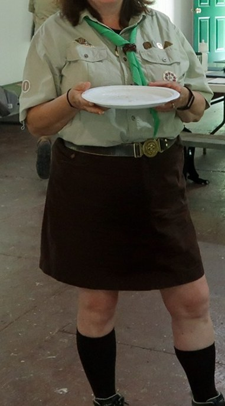
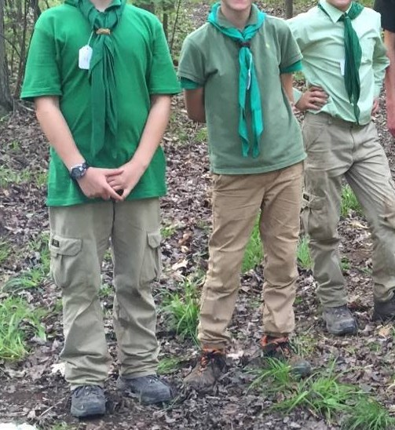
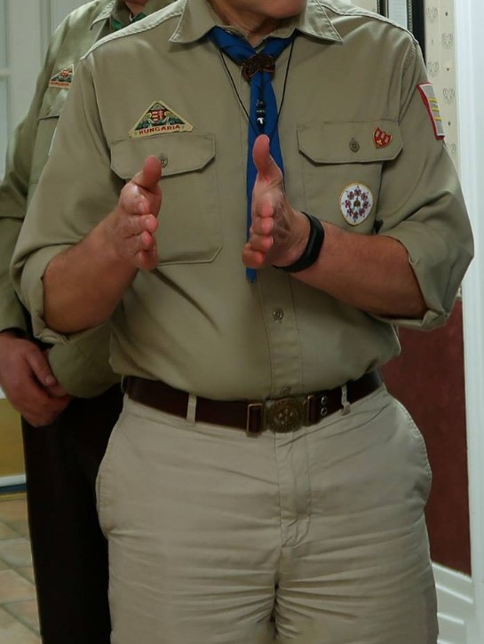
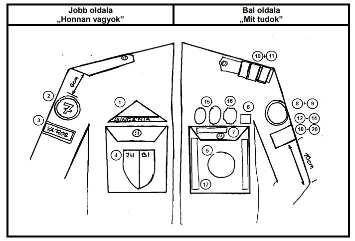
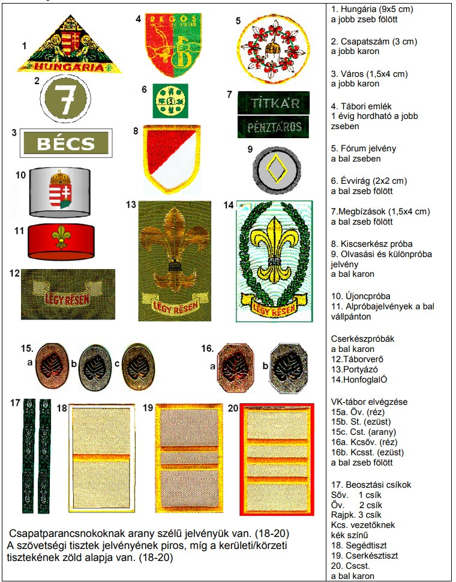

Bejgli sütés – feliratkozás
December 5-én bejgli sütés lesz több helyszínen. Válasszatok helyszínt, és írjátok be a neveteket az űrlapon (helyszínenként 2–3 nagycserkész és 2–3 kiscserkész):
Táblázat betöltése…
Cserkész feliratkozás
Helyszínként jelentkezem
Ha nálatok is lehet bejglit sütni, jelentkezzetek helyszínként:
Betlehemes előadás
December 12-én a Mikulás bulin Betlehemes előadás lesz (és bejgli árulás is). Idén is a tavalyi, Hanga által írt betlehemest adjuk elő; a szerepeket a cserkészek maguk osztották újra, a szereposztás a szöveg első oldalán található.
Gyakorolni főleg a csütörtöki foglalkozásokon fogunk, december 12-én pedig az előadás előtt összepróbáljuk a kicsikkel is. A kiscserkészek házi feladata megtanulni a három népéneket: Dicsőség mennyben az Istennek, Pásztorok, keljünk fel és Pásztorok, pásztorok (a YouTube segít). Akinek nincs szerepe, pásztor vagy angyal lesz – kérjük, gondoskodjatok jelmezről.
Karácsonyi koncert
December 26-án 19:30-kor karácsonyi koncert lesz a Schnitzer Hallban (Portland Youth Philharmonic, 65. karácsonyi koncert) — Gia is játszik. Jegyek: $25 felnőtt / $15 gyerek. Eddig a zsöllye (Orchestra) V-sorának közepére vettünk jegyeket.
Olvasási különpróba (OKP)
Az Olvasási különpróba (OKP) a KMCSSZ online olvasási programja: a gyerekek magyar könyveket olvasnak, majd az okp.kmcssz.org oldalon válaszolnak a könyvekről szóló kérdésekre. A szintek sorrendben: Induló, Gyalogló, Futó, Vágtató. Az elvégzett szint jelvénye az ing bal felső karjára kerül.
Miért kell?
Több tábor részvételi feltétele az OKP egy-egy szintje:
- Minta-tábor: Induló (kiscserkészeknek), Gyalogló (cserkészeknek)
- Dobó tábor: Futó (és az Egri csillagok megadott fejezetei)
- Őrsvezető képző tábor és Kiscserkész ŐV tábor: Vágtató (és az ŐV magyarságismereti és cserkészismereti vizsga)
A legfontosabb: csinálja meg tényleg a gyerek
Érdemes leülni vele és együtt csinálni — akkor látod, mennyire megy neki. Ha nagyon nem megy, olvassatok valamit közösen, és térjetek vissza az OKP-ra egy hónap múlva. Mivel a gyerekek angolul jól olvasnak, elég hamar megtanulnak magyarul olvasni, csak el kell mondani sokszor, hogy ne kombináljon, csak olvassa ki a betűket sorban.
Ne hagyd magára a gyereket az OKP-val: Google Fordítóval vagy a felolvasás-funkcióval, próbálgatással pár óra alatt teljesíthető az egész szint — de annak semmi értelme. Ha a szint nem irreálisan nehéz a gyereknek, azzal, hogy végigrágja magát rajta, amúgy is jót fejlődik.
Belépés és segítség
Belépés ugyanazzal az email-címmel és jelszóval, mint a régi rendszerbe. Egy email-cím elég az egész családnak: ha a gyereknek nincs saját email-címe, a szülő a saját fiókjához hozzáadhatja. A vezetők és a tanácsadók ugyanitt lépnek be. Használati videók az OKP főoldalán és a YouTube-csatornán vannak.
2026-tól változás: az őrsvezetőképző táborba jelentkezéshez a Vágtató szint elvégzése már nem kötelező — helyette a magyarságismereti felvételi vizsga előtt egy rövid olvasási és szövegértési felmérés van. Ha a jelölt nem felel meg, a tábor megkezdése előtt teljesítenie kell a Vágtató szintet.
Egyenruha
A cserkészek az eseményeken egységesen, egyféle ruházatban jelennek meg: vagy díszegyenruhában, vagy gyakorlati egyenruhában. Díszegyenruha kell a tábori zászlószertartásokra, misére és istentiszteletre, nemzeti ünnepekre és hivatalos eseményekre, valamint az avatásokra. Minden más alkalomra a gyakorlati egyenruha való. Politikai pártok és szervezetek rendezvényén nem viselünk egyenruhát.
Kiscserkészeknek – mit kell beszerezni?
Kiscserkészeknél az irányadó a csapatparancsnok levele (2026. október 29.). Egyelőre elég egy drapp/khaki/tan színű ing – akármilyen szabású, jó, ha van zsebe; női szabás is jó, kislányoknak az ingruha is jó. A többi darabot elég az évek folyamán megszerezni. A cserkész egyenruha részei: cserkésznyakkendő, cserkészing, drapp vagy zöld rövidnadrág (fiúk) / barna szoknya (lányok), zöld zokni (fiúk) / barna zokni vagy harisnya (lányok), cserkészöv.
Amit a csapat ad, azt nem kell megvenni: a nyakkendőt és az ingre való jelvényeket. Kék pöttyös nyakkendőt adunk, akinek még nincs – az a tiétek, vigyétek haza, abban gyertek.
Ingvásárláshoz néhány Amazon-link segítségül:
- Grandwish rövid ujjú ing (Amazon) →
- French Toast lányka szafari ingruha (Amazon) →
- Noomelfish western stílusú ing (Amazon) →
- Spring Gege zsebes ing (Amazon) →
Nagycserkészeknek – a hivatalos irányelv
Nagycserkészeknél a KMCSSZ Egyenruha Irányelve (2024. február) az irányadó: KMCSSZ Egyenruha Irányelv 2024 (PDF) →
Díszegyenruha: khaki cserkészing (Hungária és MCSSZF jelvénnyel, csapatszámmal, képesítési és megbízatási jelzésekkel), az inget a nadrágba, illetve a szoknyába betűrve hordjuk; korosztálynak megfelelő nyakkendő nyakkendőgyűrűvel; fiúknak khaki rövid- vagy hosszúnadrág cserkészövvel; lányoknak sötétbarna szoknya vagy szoknyanadrág cserkészövvel; fiúknak sötétzöld, lányoknak sötétbarna térdharisnya vagy zokni; barna vagy sötét, nem feltűnő cipő vagy bakancs. Ha a khaki nadrág, a barna szoknya vagy a zokni nem beszerezhető, a csapaton belül egységesen sötétzöld nadrág, szoknya és zokni is hordható. Kiegészítésként a csapatparancsnok döntése alapján Bocskai-sapka: fiúknak sötétzöld, lányoknak sötétbarna.


Gyakorlati egyenruha: nyakkendő nyakkendőgyűrűvel, tábori vagy csapatpóló; a többi ruhadarabot (sapka, nadrág, cipő, kabát stb.) a csapat- vagy táborparancsnok szabja meg az időjárás és a gyakorlati szempontok alapján.


Díszegyenruhát csak az viselhet, aki ígéretet vagy fogadalmat tett. Az újonc jelöltek nyakkendő nélkül, ingben jönnek; az óvodás- és kiscserkész-jelöltek kék, fehér pöttyös nyakkendőt viselhetnek.
A nyakkendő színe
- Kiscserkészek: kék nyakkendő (jelölteknek: kék, fehér pöttyös)
- Cserkészek: zöld nyakkendő
- Vándorcserkészek: szürke nyakkendő
- Felnőtt cserkészek: barna nyakkendő
A vezetők az általuk vezetett őrsnek vagy rajnak megfelelő színű nyakkendőt hordják. Vezetőképző táborokban a kiképző törzs tagjai sárga, az egészségügyi törzs tagjai fehér nyakkendőt viselnek.
Hova kerülnek a felvarrók?
- Hungária jelvény – a jobb zseb fölött
- MCSSZF (Fórum) jelvény – a bal zseben
- Évvirágok és vezetői képesítések (fém hársfalevelek) – a bal zseb fölött, szárral lefelé
- Csapatszám (44) – a jobb felső karon
- Segédtiszt / cserkésztiszt / csapattiszti jelvény – a bal felső karon (arany keret: csapatparancsnok; piros alátét: központi beosztás; zöld alátét: kerületi vagy körzeti beosztás)
- Őrsvezetői sávok – a bal zseben, a Fórumjelvény alatt: rajvezető 3, őrsvezető 2, segédőrsvezető 1 függőleges sáv
- Kiscserkész- és cserkészpróba-jelvények, olvasási különpróbák – a bal felső karon (a cserkészpróbák a bal vállpánton is lehetnek)
- Emlékjelvények (pl. jubileumi tábor, regős tábor) – egy évig az eseménytől számítva, a jobb zseben


Hol lehet beszerezni a többit?
A nyakkendőt és a jelvényeket a csapat adja. A többit a KMCSSZ Cserkészboltban (cserkeszbolt.org) → lehet megrendelni: nyakkendőgyűrű ($4,50), cserkészsapka ($16), nyakkendők ($8); az öv és a zokni egyelőre „hamarosan elérhető” a boltban. Elérhetőség: cserkeszbolt@kmcssz.org, 908-295-4170. Inget az Amazonról (lásd fent) vagy máshonnan is lehet venni – használt ingek néha a csapatnál is akadnak, érdemes rákérdezni.
Források: KMCSSZ Egyenruha Irányelv 2024 (PDF) · KMCSSZ honlap · KMCSSZ Cserkészbolt. A képek a KMCSSZ Egyenruha Irányelvének példaképei.